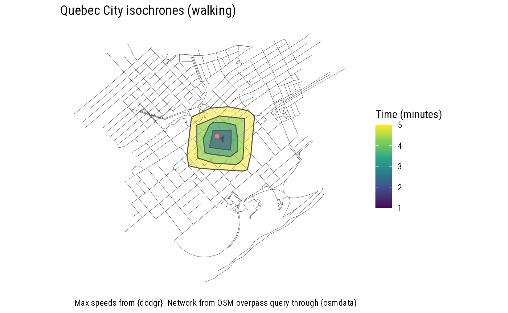
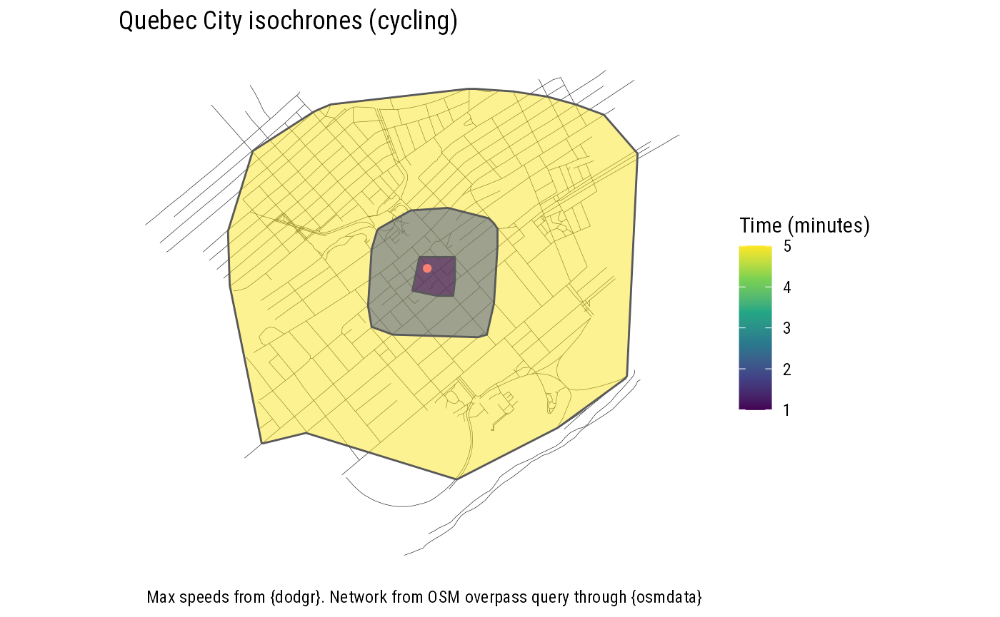
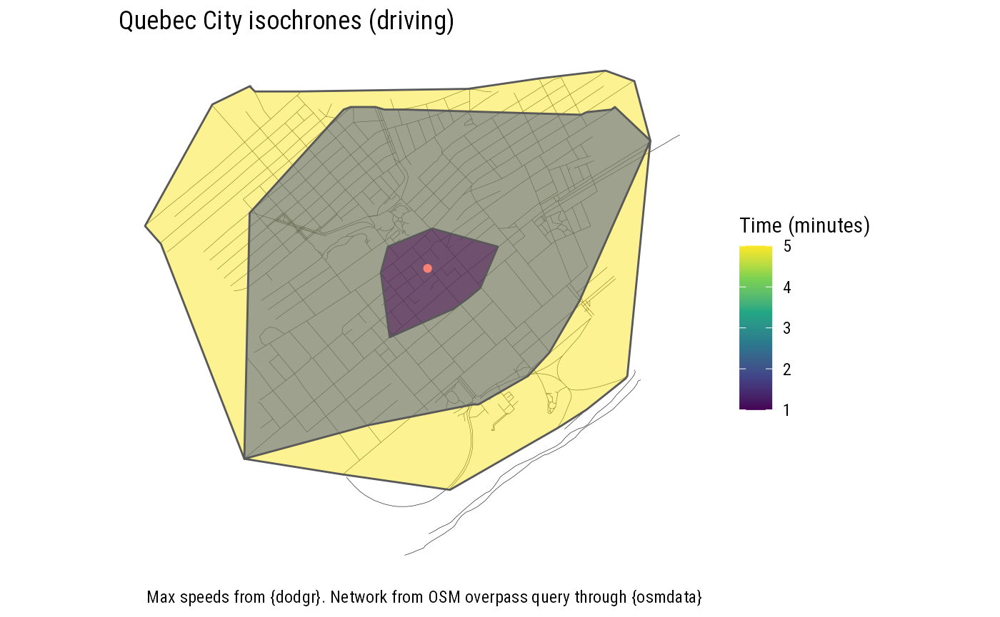
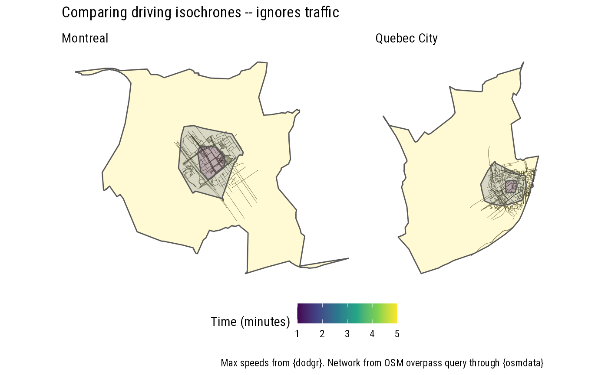

osmIsochrone.Rmd
custom_minimal_theme <- function(){ ggplot2::theme_minimal(base_family="Roboto Condensed", base_size=11.5) }
if(!dir.exists(here('figures'))){
dir.create(here('figures'))
}
list_cities <- c('Montreal', 'Quebec City')
shp_Atlanta_bbox <- bbox_from_osm('Atlanta')
shp_point <- shp_Atlanta_bbox%>% sf::st_convex_hull() %>% st_centroid()
osm <- osmdata::opq(bbox = 'Atlanta') %>%
add_osm_feature( key = "highway" ) %>%
osmdata_sf ()
shp_iso_all_modes <- SfSpHelpers::st_make_isochrone (shp_point %>% st_transform(crs=4326),
buffer_km = 1)
ggplot() +
geom_sf(data=osm$osm_lines,lwd=0.1) +
geom_sf(data=shp_iso_all_modes, aes(fill=limit_minutes),alpha=0.5) +
geom_sf(data=shp_point, col='salmon') +
scale_fill_viridis_c() +
facet_wrap(~mode,nrow=2) +
ggtitle('Atlanta isochrones') +
labs(caption = 'Max speeds from {dodgr}. Network from OSM overpass query through {osmdata} ',
fill='Time (minutes)') +
custom_minimal_theme() +
coord_sf(datum=NA)
#ggsave(here('figures', 'isochrones_all_modes_atlanta_1km.png'),bg='white')
shp_point <- data.frame(X=-71.22776107610193, Y=46.805060757836486) %>%
sf::st_as_sf(coords=c('X','Y'),crs=4326)
osm <- SfSpHelpers::osm_buffer_query_helper(shp_point,buffer_km = 1 )
shp_isochrone <- SfSpHelpers::st_make_isochrone (shp_point,
buffer_km = 1,
limit_minutes = seq(1,5,by=1),
list_modes= c("foot"),
list_osm_params= list( list(key='highway' ) )
)
#> Error in curl::curl_fetch_memory(url, handle = handle): HTTP/2 stream 0 was not closed cleanly: PROTOCOL_ERROR (err 1)
#> Request failed [ERROR]. Retrying in 1.1 seconds...
#> Error in curl::curl_fetch_memory(url, handle = handle): HTTP/2 stream 0 was not closed cleanly: PROTOCOL_ERROR (err 1)
#> Request failed [ERROR]. Retrying in 1 seconds...
#> Warning in st_cast.sf(polys, "LINESTRING"): repeating attributes for all sub-
#> geometries for which they may not be constant
#> [1] "...OSM successfully queried..."
#> [1] "...Network successfully converted to graph..."
#> Watch out! It takes at least 0.44 minutes to walk (fly..) from point (-71.2277610761019,46.8050607578365) to the nearest street
#> Weird results! there are only 3 points! Trying a triangle
#> [1] "...Isochrones successfully computed for all modes..."
ggplot() +
geom_sf(data=osm$osm_lines,lwd=0.1) +
geom_sf(data=shp_isochrone, aes(fill=limit_minutes),alpha=0.5) +
geom_sf(data=shp_point, col='salmon') +
scale_fill_viridis_c() +
ggtitle('Quebec City isochrones (walking)') +
labs(caption = 'Max speeds from {dodgr}. Network from OSM overpass query through {osmdata} ',
fill='Time (minutes)') +
custom_minimal_theme() +
coord_sf(datum=NA)
shp_isochrone <- SfSpHelpers::st_make_isochrone (shp_point,
buffer_km = 1,
limit_minutes = c(1,2,5),
list_modes= c("bicycle"),
list_osm_params= list( list(key='highway' ) )
)
#> Warning in st_cast.sf(polys, "LINESTRING"): repeating attributes for all sub-
#> geometries for which they may not be constant
#> [1] "...OSM successfully queried..."
#> [1] "...Network successfully converted to graph..."
#> Watch out! It takes at least 0.44 minutes to walk (fly..) from point (-71.2277610761019,46.8050607578365) to the nearest street
#> [1] "...Isochrones successfully computed for all modes..."
ggplot() +
geom_sf(data=osm$osm_lines,lwd=0.1) +
geom_sf(data=shp_isochrone, aes(fill=limit_minutes),alpha=0.5) +
geom_sf(data=shp_point, col='salmon') +
scale_fill_viridis_c() +
ggtitle('Quebec City isochrones (cycling)') +
labs(caption = 'Max speeds from {dodgr}. Network from OSM overpass query through {osmdata} ',
fill='Time (minutes)') +
custom_minimal_theme() +
coord_sf(datum=NA)
shp_isochrone <- SfSpHelpers::st_make_isochrone (shp_point,
buffer_km = 1,
limit_minutes = c(1,2,5),
list_modes= c("motorcar"),
list_osm_params= list( list(key='highway' ) )
)
#> Error in curl::curl_fetch_memory(url, handle = handle): HTTP/2 stream 0 was not closed cleanly: PROTOCOL_ERROR (err 1)
#> Request failed [ERROR]. Retrying in 1.8 seconds...
#> Warning in st_cast.sf(polys, "LINESTRING"): repeating attributes for all sub-
#> geometries for which they may not be constant
#> [1] "...OSM successfully queried..."
#> [1] "...Network successfully converted to graph..."
#> Watch out! It takes at least 0.44 minutes to walk (fly..) from point (-71.2277610761019,46.8050607578365) to the nearest street
#> [1] "...Isochrones successfully computed for all modes..."
ggplot() +
geom_sf(data=osm$osm_lines,lwd=0.1) +
geom_sf(data=shp_isochrone, aes(fill=limit_minutes),alpha=0.5) +
geom_sf(data=shp_point, col='salmon') +
scale_fill_viridis_c() +
ggtitle('Quebec City isochrones (driving)') +
labs(caption = 'Max speeds from {dodgr}. Network from OSM overpass query through {osmdata} ',
fill='Time (minutes)') +
custom_minimal_theme() +
coord_sf(datum=NA)
get_isochrone_from_city_centroid <- function(city_str,
buffer_size_km = 5, #at 50 km/h <-> 1.2 min per km, driving for 15 minutes results in 18 km distance
list_modes=c("motorcar"),
list_times=c(1,2,5)){
shp_bbox <- SfSpHelpers::st_osm_city_centroid_from_string(city_str)
shp_isochrone <- SfSpHelpers::st_make_isochrone (
shp_bbox %>% st_centroid(),
buffer_km = buffer_size_km,
limit_minutes =list_times,
list_modes= list_modes,
list_osm_params= list( list(key='highway' ) )
)
#Add the city name
shp_isochrone %<>% mutate(city=city_str)
return(shp_isochrone)
}
get_street_network <- function(city_str,
buffer_size_km = 1){
shp_bbox <- SfSpHelpers::st_osm_city_centroid_from_string(city_str)
osm_results <- SfSpHelpers::osm_buffer_query_helper( shp_point = st_centroid(shp_bbox),
buffer_km = buffer_size_km)
shp_streets <- osm_results$osm_lines
shp_streets %<>% mutate(city=city_str)
assertthat::assert_that(nrow(shp_streets) >0)
return(shp_streets)
}
shp_isochone <- map_dfr( list_cities,
get_isochrone_from_city_centroid)
#> Error in curl::curl_fetch_memory(url, handle = handle): HTTP/2 stream 0 was not closed cleanly: PROTOCOL_ERROR (err 1)
#> Request failed [ERROR]. Retrying in 1 seconds...
#> Error in curl::curl_fetch_memory(url, handle = handle): HTTP/2 stream 0 was not closed cleanly: PROTOCOL_ERROR (err 1)
#> Request failed [ERROR]. Retrying in 2.9 seconds...
#> Warning in st_cast.sf(polys, "LINESTRING"): repeating attributes for all sub-
#> geometries for which they may not be constant
#> [1] "...OSM successfully queried..."
#> [1] "...Network successfully converted to graph..."
#> Watch out! It takes at least 0.09 minutes to walk (fly..) from point (-73.72422595,45.5575763427528) to the nearest street
#> [1] "...Isochrones successfully computed for all modes..."
#> Error in curl::curl_fetch_memory(url, handle = handle): HTTP/2 stream 0 was not closed cleanly: PROTOCOL_ERROR (err 1)
#> Request failed [ERROR]. Retrying in 1 seconds...
#> Error in curl::curl_fetch_memory(url, handle = handle): HTTP/2 stream 0 was not closed cleanly: PROTOCOL_ERROR (err 1)
#> Request failed [ERROR]. Retrying in 1.2 seconds...
#> Warning in st_cast.sf(polys, "LINESTRING"): repeating attributes for all sub-
#> geometries for which they may not be constant
#> [1] "...OSM successfully queried..."
#> [1] "...Network successfully converted to graph..."
#> Watch out! It takes at least 0.15 minutes to walk (fly..) from point (-71.2084061000007,46.8136959000714) to the nearest street
#> [1] "...Isochrones successfully computed for all modes..."
shp_streets <- map_dfr( list_cities,
~get_street_network(.x,buffer_size_km = 1))
library(patchwork)
plot_city <- function(city_str){
ggplot() +
geom_sf(data=shp_streets %>% filter(city==city_str),lwd=0.1) +
geom_sf(data=shp_isochone%>% filter(city==city_str), aes(fill=limit_minutes),alpha=0.2) +
scale_fill_viridis_c() +
labs(subtitle = city_str) +
custom_minimal_theme() +
coord_sf(datum=NA)
}
list_plots <- map(list_cities , plot_city )
wrap_plots( list_plots) +
plot_annotation(
title='Comparing driving isochrones -- ignores traffic' ,
caption = 'Max speeds from {dodgr}. Network from OSM overpass query through {osmdata} '
) +
plot_layout(guides = 'collect') & theme(legend.position = 'bottom',
plot.title = element_text(family='Roboto condensed'),
plot.caption = element_text(family='Roboto condensed')) & labs(fill='Time (minutes)' )
#ggsave(here('figures','driving_isochrones_size_by_time_map.png'),bg='white', width = 7, height = 5)
compare_size <- function(shp_isochone, time){
shp_isochone_time <- shp_isochone %>% filter(limit_minutes==time)
shp_isochone_time %>%
st_transform(crs=3857) %>%
mutate(area_sq_km=units::drop_units(st_area(.))*10**-6)
}
df_sizes <- map_dfr( c(1,2,5), ~compare_size(shp_isochone, .x))
ggplot() +
geom_line(data=df_sizes,aes(x=limit_minutes, y=area_sq_km, group=city,col=city)) +
ggtitle('Comparing driving isochrones sizes') +
labs(subtitle = 'Isochrone computed from city centroid -- ignores traffic',
caption = 'Max speeds from {dodgr}. Network from OSM overpass query through {osmdata} ',
col='') +
custom_minimal_theme() +
xlab('Drive time') +
ylab('Area (square km)')
#ggsave(here('figures','driving_isochrones_size_by_time_lines.png'),bg='white', width = 7, height = 5)